Adquisición de datos
- 1 Introducción
- 2 Monitor de estado
- 2.1 Información de licencia
- 2.2 Arquitectura
- 3 Creación de servicios
- 4 Edición de servicios
- 4.1 Edición diagrama
- 4.2 Edición catálogo
- 4.2.1 Interaccion de señales y piezas
- 4.2.2 Control de cambios
1. Introducción
IDbox está formado por distintos servicios que se orquestan para proporcionar la funcionalidad personalizada deseada, como puede ser la adquisición de datos. La administración y configuración de estos servicios puede realizarse a través del administrador del sistema mediante sus páginas de monitor de estado, y creación/edición de servicio. A lo largo de la sección se muestra el funcionamiento de cada una de ellas, cuyo acceso es posible desde el panel de control tal y como muestra la siguiente imagen.
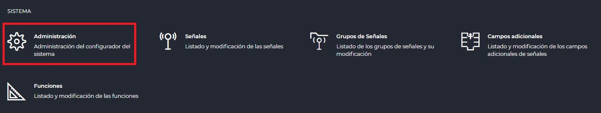
2. Monitor de estado
El monitor de estado es el punto de acceso a la administración de servicios, permitiendo visualizar y configurar los servicios actualmente instalados o la creación de nuevos a lo largo de los distintos servidores a los que se tiene acceso.
2.1 Información de licencia
Sitúada en la parte superior derecha, y como se visualiza en la siguiente imagen, la información de licencia permite visualizar su tipo, el porcentaje de señales utilizadas respecto a su límite y su fecha de expiración. La barra de progreso permite percibir el porcentaje de consumo actual de manera gráfica.
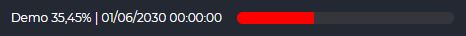
2.2 Arquitectura
Para facilitar la ubicación de cada uno de los servicios, se muestran agrupados en distintos bloques que representan el servidor que los alberga. A modo de ejemplo, en la siguiente imagen se observa un único servidor, pero la cantidad dependerá del número de servidores que comprenda la infraestructura.
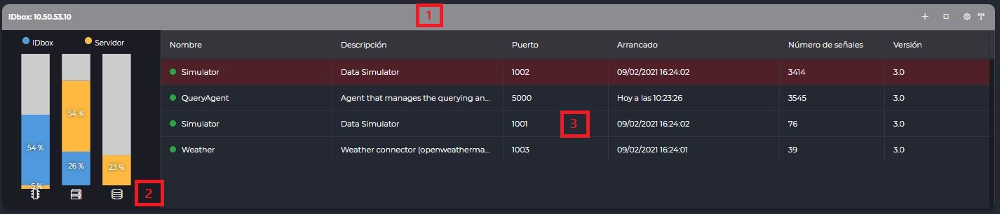
Esta visualización se estructura en tres partes resaltadas en rojo que a continuación se detallan.
- Acciones: además de visualizar su direccionamiento, permite añadir un nuevo servicio, iniciar o detener el servicio seleccionado, así como acceder a al edición diagrama o edición catálogo.
- Consumos y rendimiento: muestra el uso de memoria y cpu tanto de IDbox como del servidor, además del almacenamiento disponible.
- Servicios: lista completa de los servicios asociados al servidor, junto con su estado, nombre, descripción, puerto, fecha de puesta en ejecución, número de señales y versión.
Además, como una herramienta adicional para facilitar la búsqueda de los servicios, en la parte superior izquierda es posible introducir un término que se aplica a todos los servidores disponibles de manera simultánea, filtrando todas las posibles coincidencias.
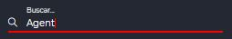
3. Creación de servicios
Mediante la acción de nuevo servicio disponible desde el servidor deseado en el monitor de estado, el asistente por pasos para la creación de servicio se inicia. El primer paso debe completarse con el nombre a dar al servicio, y una descripción opcional, como muestra la siguiente imagen.
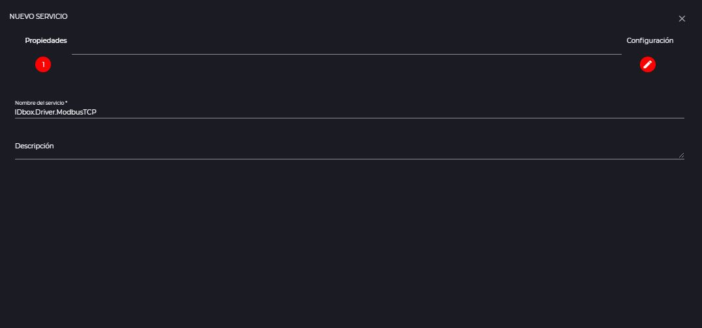
El segundo paso permite la configuración del servicio a partir de una plantilla predefinida en el sistema, que es posible seleccionar a la izquierda, y que puede ser tanto un “Servicio vacío” por defecto como un tipo de driver en concreto. Mientras que en el primer caso no será necesario proporcionar más detalles, en el segundo escenario es necesario completar una serie de parámetros básicos de inicialización que a modo de ejemplo muestra la siguiente imagen.
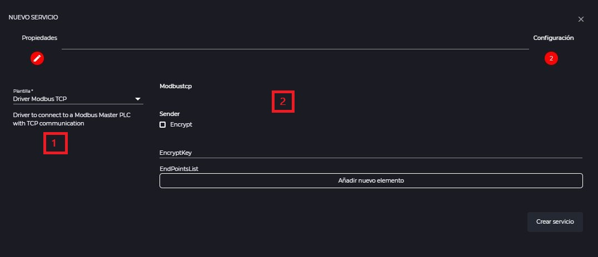
4. Edición de servicios
Los servicios pueden ser modificados desde dos perspectivas: la edición de diagrama y de catálogo. Mientras que el primer editor facilita la configuración de la lógica y comportamiento general del servicio, el segundo permite gestionar la interacción con las señales de IDbox que contiene.
4.1 Edición diagrama
Para acceder a la edicion diagrama es suficiente con seleccionar el servicio deseado desde el monitor de estado y hacer clic sobre el icono de edición de servicio: . Una vez accionado, el editor se encuentra disponible para su uso tal y como se muestra en la siguiente imagen junto con las secciones que se describen seguidamente.
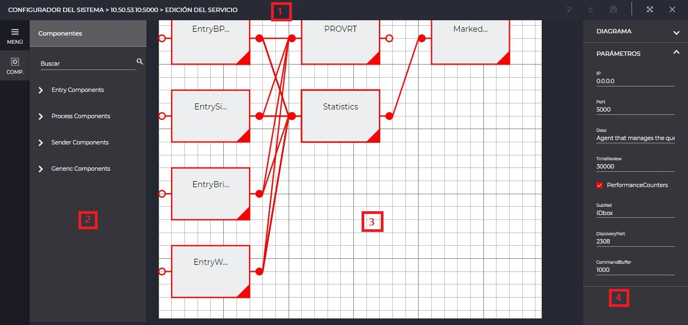
- Acciones: proporciona las herramientas de deshacer, rehacer, guardado, pantalla completa y cierre de la edición.
- Herramientas: permite acceder a las operaciones de edición y componentes disponibles para su uso.
- Tapiz: área de diseño a donde poder arrastrar y enlazar los componentes según el flujo que se desee construir.
- Propiedades: cada uno de los elementos seleccionados en el tapiz cuentan con una serie de propiedades que pueden personalizarse en este panel derecho.
4.2 Edición catálogo
El acceso a la edición de catálogo puede efectuarse seleccionando el servicio deseado en el monitor de estado y haciendo clic sobre el icono de catálogo: . Como muestra la siguiente imagen, tras esta acción el editor queda disponible para su uso con diferentes áreas de uso que de describen a continuación.
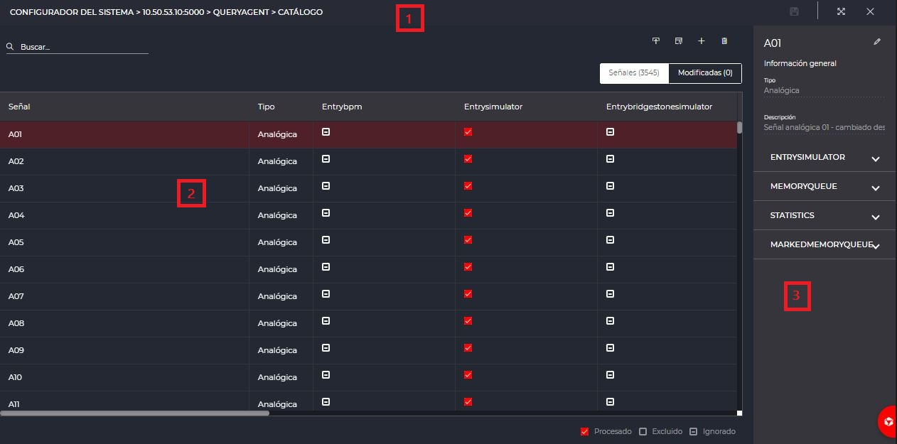
- Acciones: permite ejecutar el guardado de los cambios, pantalla completa y cierre de la edición.
- Catálogo: muestra la lista de señales que forman parte del catálogo del servicio y el modo de interacción con las piezas. Igualmente, se facilitan las operaciones de importar señales al sistema, exportar plantilla de importación, y añadir o borrar señales del sistema al catálogo.
- Propiedades: facilita la configuración de las propiedades para la señal seleccionada según las piezas que procesa y permite un acceso directo a la edición de la señal así como su información resumida.
En el caso de modificar una señal desde la edición de catálogo, al guardar una configuración de alarmas o límites de la señal provocará su sincronización con el catálogo cuando se cuente con una pieza LIMIT, tal y como muestra la siguiente advertencia.
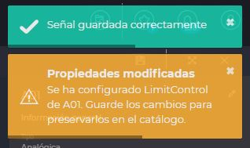
4.2.1 Interaccion de señales y piezas
La interacción entre las señales incluidas en el catálogo y las piezas del servicio puede tomar tres estados que se muestran en la siguiente figura y se describen a continuación.
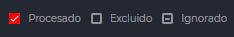
- Procesado: la pieza y señal seleccionadas están configuradas y en funcionamiento.
- Excluido: la pieza y señal seleccionadas están configuradas pero no activado su funcionamento.
- Ignorado: la pieza y señal no están configuradas, y por tanto, tampoco en funcionamiento.
4.2.2 Control de cambios
A medida que se aplican cambios, bien cambiando el modo de interacción desde la lista de catálogo o alterando los valores entre las propiedades, las señales modificadas muestran un indicador que las diferencia del resto. Igualmente, y como muestra la siguiente imagen, la navegación entre “Señales” y “Modificadas” permite tanto su filtrado como cuenteo.
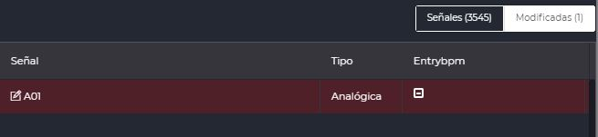
Es importante destacar que los cambios acumulados no se almacenan hasta accionar el guardado, salvo la agregación de señales que se produce de manera instántanea.